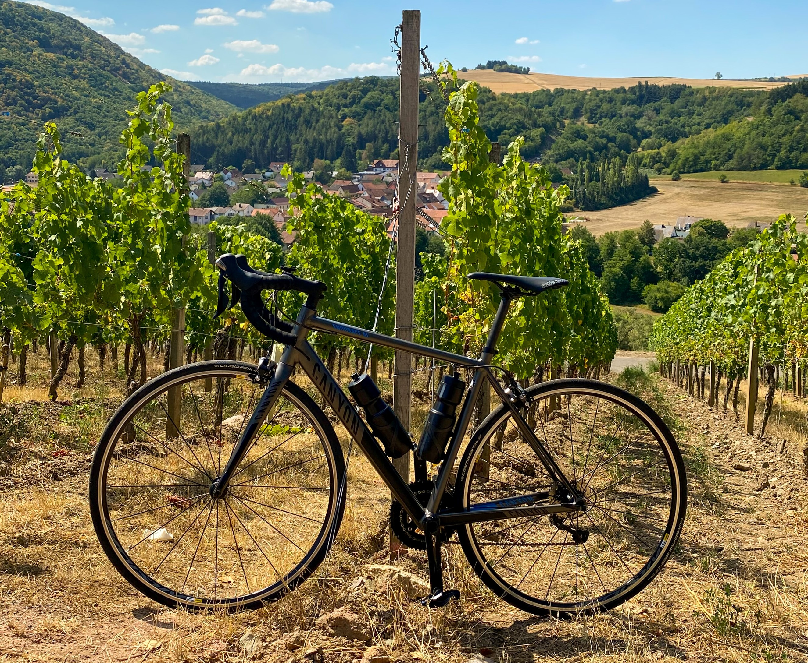
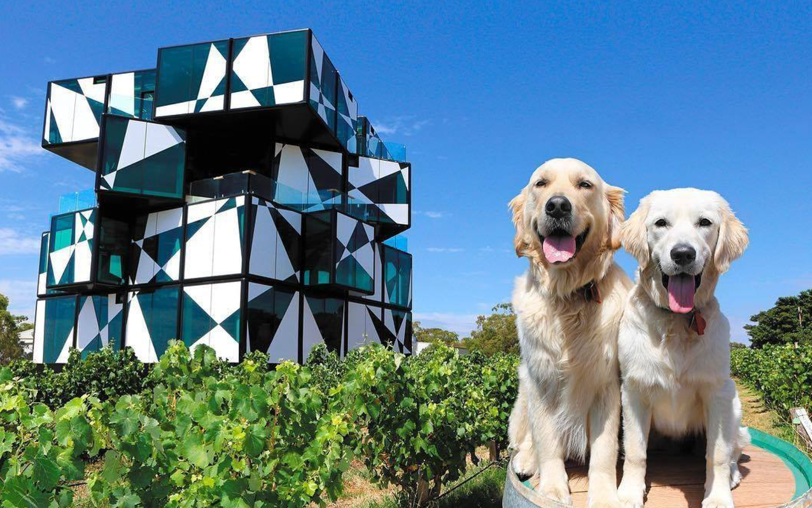

Проведите 3 дня на самых известных винодельнях Южной Австралии, удобно расположенных друг к другу.
День первый
Мы посетим два впечатляющих винодельческих региона за один день в долине Баросса, которая расположена в полутора часах езды от Аделаиды. Несомненно, это самый популярный винный регион Австралии.
Вы отведаете первосортные вина и посетите винодельни таких известных марок, как Yulumba и Penfolds. Вас ждет незабываемый тур по великим виноградникам, где вы сможете насладиться не только вином и изысканными блюдами но и познакомится с виноделами и увидеть один из старейших лоз Гренаша в мире, изготовить вино собственными руками, и насладиться прекрасным обедом на открытом воздухе с видом на холмы.
И в завершения дня. Мы посетим виноградники Penfolds , где не только увидим великие виноградники но и попробуем крепленные вина от великого производителя. Это уникальный опыт и возможность прикоснуться к легенде и попробовать редкие вина.
День второй
Второй день тура
Вас не оставит равнодушным, вас ждет большое путешествием в мир Рислинга в долине Клер. Наш тур будет продолжаться 7 часов на велосипедах, вы спросите почему именно велосипеды!? Мы хотим показать вам всю красоту природы этой местности


На ряду с этой красотой
вас ждут живописные виноградники, винные погреба и фермерские хозяйства, где делают разные деликатесы. В некоторых винных погребах подаются блюда из свежих местных продуктов, ресторанные блюда и закуски, мы проедем населенные пункты Leasingham, Watervale, Penwortham, Sevenhil и остановимся в городе Auburn.День третий
(завершающий)
Посетить винный тур по Южной Австралии и не по бывать в MacLaren Vale!?
Мы не могли упустить возможность показать эти прекрасные местности. Посетив виноградники известных производителей как d’Arenberg , WirraWirra.

Вас ждет вид на виноградники с D'Arenberg Cube - это многофункциональное здание, в котором есть ресторан где вас ждет изысканный обед, дегустационный зал, виртуальный ферментер, видео-зал с обзором на 360 градусов и Музей альтернативных реальностей, в котором представлены многочисленные художественные инсталляции. Еще одна особенность виноградника d’Arenberg это собаки ,которые являются частью виноделья. На винодельне найдете верных собак, дремлющих в погребе или бродящих по виноградникам. Самые жаркие баталии последних лет происходят вокруг натуральных и биовин. Их и любят, и ненавидят! Предстоит уникальная возможность увидеть, попробовать, прочувствовать все самому на винодельне Wirra Wirra.